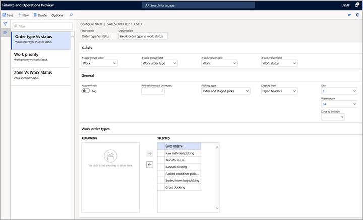
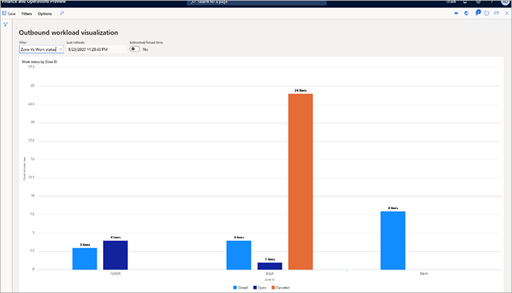
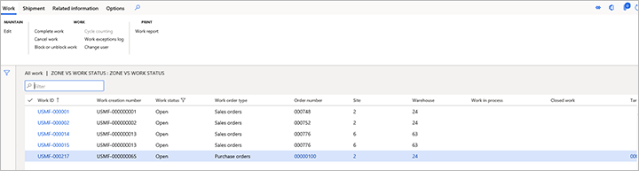

Ausgehende Workloadvisualisierung
Important
Dynamics 365 for Finance and Operations hat sich zu speziell entwickelten Anwendungen entwickelt, mit denen Sie bestimmte Geschäftsfunktionen verwalten können. Weitere Informationen zu diesen Änderungen finden Sie im Dynamics 365-Lizenzierungshandbuch.
Erweiterte Funktionalitäten, die über die Seite Visualisierung der Arbeitsauslastung im Ausgang zugänglich sind, ermöglichen es Lagerleitern und Vorgesetzten, benutzerdefinierte Diagramme der Arbeitsauslastung zu erstellen, die zur Überwachung des Fortschritts der aktuellen Arbeit und der verbleibenden Menge verwendet werden können. Lagerortverwaltungen können mehrere Ansichten erstellen und bei Bedarf eine automatische Aktualisierung festlegen. Visualisierungen der ausgehenden Arbeitsauslastung eignen sich für die Anzeige auf den Seiten zur Lagerort-Leistung.
Diese Funktionalität kann verwendet werden, um den Fortschritt von Entnahmearbeiten zu verfolgen. Die Funktion ist mit der Arbeitsverwaltung integriert, und wenn die Arbeitsverwaltung festgelegt ist, können die Visualisierungen der ausgehenden Arbeitsauslastung eine Berechnung der Anzahl der Stunden anzeigen, die für die angezeigte (gefilterte) Entnahmearbeit verbleiben.
Einschalten der Funktion zur Visualisierung der ausgehenden Arbeitsauslastung
Bevor Sie diese Funktion nutzen können, muss sie auf Ihrem System aktiviert werden. Admins können die Einstellungen Funktionsverwaltung verwenden, um den Status der Funktion zu prüfen und sie einzuschalten. Im Arbeitsbereich Funktionsverwaltung ist die Funktion wie folgt aufgeführt:
- Module: Lagerortverwaltung
- Name der Funktion: Visualisierung der ausgehenden Arbeitsauslastung
Visualisierungen der ausgehenden Arbeitsauslastung festlegen
Um Ihre Visualisierungen festzulegen, erstellen Sie eine Sammlung von Filtern (Ansichten) und gestalten jeden Filter so, dass er eine andere Art von Analyse anzeigt. Sie verwenden die Seite Filter konfigurieren, um die Filter zu entwerfen.
Um eine Visualisierung der ausgehenden Arbeitsauslastung festzulegen, gehen Sie wie folgt vor.
Gehen Sie auf Lagerortverwaltung > Lagerort-Überwachungsberichte > Visualisierung der ausgehenden Arbeitsauslastung.
Die Seite Visualisierung der ausgehenden Arbeitsauslastung erscheint. Nachdem Sie einige Filter erstellt haben, wird diese Seite Ihre Visualisierung anzeigen. Sie können so viele Filter erstellen, wie Sie wollen. Alle Filter, die Sie erstellen, werden unter Ihrem Benutzerkonto gespeichert, sodass Sie sie später verwenden können. Mit anderen Worten: Jeder Benutzer hat seinen eigenen Satz von Filtern, die er erstellt hat. Diese Filter werden nicht mit anderen Benutzern geteilt.
Wählen Sie auf der Seite Visualisierung der ausgehenden Arbeitsauslastung im Aktivitätsbereich auf der Registerkarte Filter die Option Filter konfigurieren.
Wählen Sie auf der Seite Filter konfigurieren im Aktivitätsbereich Neu, um einen Filter hinzuzufügen, und legen Sie dann die folgenden Felder dafür fest:
- X-Achsen-Gruppentabelle - Wählen Sie die Tabelle, die das Feld enthält, das zum Gruppieren der X-Achsen-Werte verwendet werden soll.
- X-Achsengruppenfeld - Wählen Sie aus den Feldern der Tabelle, die Sie im Feld X-Achsengruppentabelle ausgewählt haben, das Feld aus, das zum Gruppieren der X-Achsenwerte verwendet werden soll.
- X-Achsenwert-Tabelle - Wählen Sie die Tabelle, die das Feld enthält, das für die weitere Analyse der Gruppen verwendet werden soll.
- X-Achsenwertfeld - Wählen Sie aus den Feldern der Tabelle, die Sie im Feld X-Achsenwerttabelle ausgewählt haben, das Feld aus, das die Werte liefert, die für jede Gruppe analysiert werden sollen.
- Automatisch aktualisieren - Wählen Sie, ob die Visualisierung automatisch aktualisiert werden soll.
- Auffrischungsintervall (Minuten) - Geben Sie die Anzahl der Minuten zwischen den automatischen Auffrischungen ein.
- Anzeigestufe - Wählen Sie, ob das Diagramm offene Zeilen oder die Anzahl offener Kopfzeilen anzeigen soll.
- Typ der Entnahme - Wenn Sie das Feld Anzeigeebene auf Offene Zeilen festlegen, wählen Sie, ob die Zählung der offenen Zeilen im Diagramm anfängliche Entnahmen, gestaffelte Entnahmen oder sowohl anfängliche Entnahmen als auch gestaffelte Entnahmen enthalten soll.
- Standort - Wählen Sie den Standort, für den das Diagramm geladen werden soll.
- Lagerort - Wählen Sie den Lagerort aus, für den das Diagramm geladen werden soll.
- Einzubeziehende Tage - Geben Sie die Anzahl der Tage in der Vergangenheit ein, für die das Diagramm erstellt werden soll.
- Arbeitsauftragstyp - Wählen Sie die Typen der ausgehenden Arbeitsaufträge, nach denen gefiltert werden soll.

Schließen Sie die Seite Filter konfigurieren, um zur Seite Visualisierungen der ausgehenden Arbeitsauslastung zurückzukehren.
Die Seite Visualisierungen der ausgehenden Arbeitsauslastung zeigt jetzt Daten an, die auf Ihren neuen Filtereinstellungen basieren. Ihr neuer Filter ist jetzt verfügbar und wird im Feld Filter ausgewählt. Die folgenden Felder sind am oberen Rand des Diagramms verfügbar:
- Filter - Dieses Feld enthält alle Filter, die Sie bisher erstellt haben. Wählen Sie einen Filter aus, um seine Daten im Diagramm anzuzeigen.
- Zuletzt aktualisiert - Dieses Feld zeigt das Datum und die Uhrzeit an, zu der die Informationen im Diagramm zuletzt aktualisiert wurden.
- Geschätzte/Ist-Zeit - Wenn in Ihrem System Arbeitsstandards festgelegt sind, legen Sie diese Option auf Ja fest, um die kumulierten geschätzten Kommissionierzeiten oben in jeder Spalte des Diagramms anzuzeigen. Wenn Sie keine Arbeitsstandards verwenden, ist diese Option nicht verfügbar.

Wählen Sie einen beliebigen Balken im Diagramm aus, um die zugehörigen Details zur Arbeitszeile anzuzeigen.

Beispiel: Visualisierung der ausgehenden Arbeitsauslastung für Zonen
Für dieses Beispiel möchten Sie eine Visualisierung festlegen, die Arbeitszeilen für jede Zone und den Status jeder Arbeitszeile (Offen, Geschlossen oder Abgebrochen) anzeigt. In diesem Fall können Sie einen Filter festlegen, der die folgenden Einstellungen hat:
- Filtername - Geben Sie einen Namen für diesen Filter ein (z. B. Zone vs. Arbeitsstatus).
- Beschreibung - Geben Sie eine kurze Beschreibung für diesen Filter ein (z. B. Zone vs. Arbeitsstatus).
- X-Achse Gruppentabelle - Wählen Sie Lagerplätze.
- X-Achsengruppe - Wählen Sie Zonen-ID.
- X-Achsenwert-Tabelle - Wählen Sie Arbeit, da Sie die Arbeit pro Zone anzeigen möchten.
- X-Achsen-Wertefeld - Wählen Sie Arbeitsstatus, weil Sie den Arbeitsstatus anzeigen wollen.
- Automatisch aktualisieren - Wählen Sie, ob die Visualisierung automatisch aktualisiert werden soll.
- Typ der Entnahme - Wählen Sie Erstentnahmen und gestaffelte Entnahmen, weil Sie sowohl Erstentnahmen als auch Entnahmen von gestaffelten Lagerplätzen einbeziehen wollen. Mit anderen Worten: Sie wollen im Wesentlichen alle Zeilen mit Entnahmearbeiten einbeziehen, die Sie haben.
- Anzeigeebene - Wählen Sie Zeilen öffnen, weil Sie die Informationen pro Zeile und nicht pro Arbeitskopf anzeigen wollen.
Die folgende Abbildung zeigt ein Beispiel für das resultierende Diagramm.
Dieses Diagramm zeigt zwei Zonen mit den Namen FLOOR und BULK, sowie eine Zone mit dem Namen Blank. Die Zone Leer repräsentiert alle Arbeitszeilen, die nicht Mitglied einer Zone sind. Das Diagramm zeigt immer alle nicht zugehörigen gefilterten Daten als Leerzeichen an, um eine möglichst gute Sichtbarkeit zu gewährleisten. In der Zone FLOOR zeigt das Diagramm drei geschlossene Zeilen und vier offene Zeilen. In der Zone BULK zeigt das Diagramm vier geschlossene Linien, eine offene Linie und 24 gelöschte Linien. Schließlich zeigt das Diagramm acht geschlossene Zeilen, die zu keiner Zone gehören und daher als Leer aufgeführt sind.